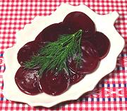

|
Pickled BeetsNorway - Syltede Rodbeter | ||||
| Makes: Effort: Sched: DoAhead: |
2 pounds *** 45 min Best |
Tasty and mild, this is not a preserving strength pickle, but pickled for flavor. Served it warm or cold, but refrigerate if it's held for more than a half day. | |||
|
2 ------ 1/4 2 1/4 3/4 9 ------ 1-1/4 1/3 |
# -- c T t t -- T c |
Beets, small -- Pickle Vinegar Sugar (1) Salt Caraway Seed Cloves ----------- Cornstarch Water |
Make - (45 min)
|